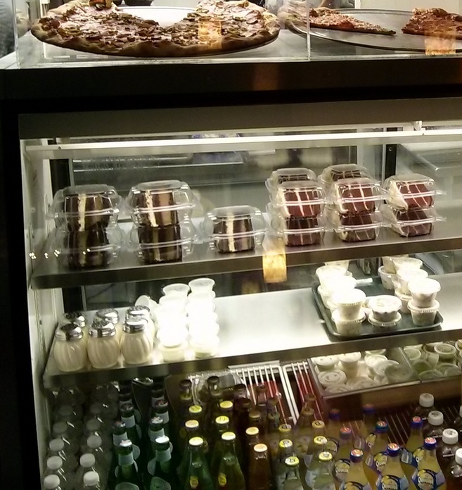

Little Deli & Pizzeria is a locally owned and operated, northeastern style deli and pizzeria. We offer the best of both worlds - great deli sandwiches and authentic New Jersey pizza.
Our sandwiches are made on fresh baked breads, using the best quality meats and cheeses. All of our soups and salads are homemade and our variety of desserts are made either in-house or come from a local bakery.
Our pizza is made using our homemade dough which is prepared in the artisan style the old fashioned way. We hand toss our pies and bake them on two inch stone hearths. They are sold by the pie or by the slice.